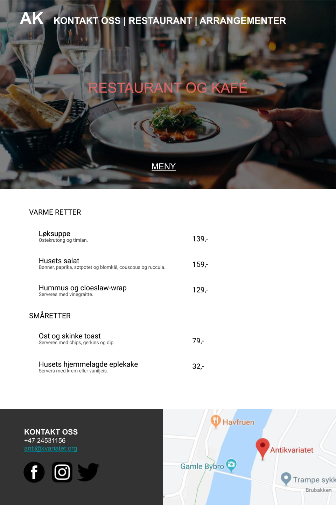

Administrative Details
Antikvariatet is a cozy bar/pub/café/venue located at Bakklandet in Trondheim. It offers a great assortment of beers as well as outside serving. The inside of Antikvariatet consists of two separated areas. One offers a calm, laid-back atmosphere while the other hosts various kinds of events. The events ranges from small concerts and standup comedy to cultural performances and social debates.
Purpose, goals and audience
The main purpose of this website is to inform customers about events happening at Antikvariatet. The business goal is to increase the amount of visitors to the venue. This means that the "event" section of the website needs to stand out. In addition,
special offers also need to be clearly communicated. The website has to capture the cozy atmosphere Antikvariatet offers. In the section "Page layout and Apperatance" we will talk about how we want to acheive this.
The intended user is in the age group 18 to 60. These customers tend to use the internet more for looking up information about the venue. In order for the website to caputre the attention to all age groups, it will have some content
directed to both ends of the age scale. For example, artists directed towards younger and older clientelle will be booked. An example of an artist for older custormers would be the Norewgian band DDE.
Navigation Structure
The structure of our website should be made so that the user easily can navigate between the different main components of the website, which are the event-, the restaurant- and the contact us - pages. As easily should it be to go back to the main page. The website will therefore consist of the same navigation bar on every page with buttons which directs the users directly to all of the other pages. This makes it easy to navigate freely between the pages and the user will never click into a page he or she can’t get back from. The structure makes sense for the website because the navigation should be intuitive and all the category pages should be equally accessible.
Page Layout and Appearance
The layout and apprearance in this section were made to give the website the feel of a cozy and professional venue.
Font
- Font-type: Times
- Main title (mid page): 7vw. Responsive with respect to the viewport-width of the browser.
- Navigation bar: 20px. Keeping the same size until a certain browser-width. If the browser-width is under a certain size, it will responsively change by gathering the elements into a dropdown icon
- Content elements: main titles (example: “About us”) set to 40px and tekst (paragraph containing the “About us” info) to 16px.
Color Scheme:
- Text: White and black, determined by the background
- Background colour
- White where the main text and content is
- #333 on the footer
- The background image behind the banner logo “ANTIKVARIATET” should have a warm colour tint. This “warm” tint reflects the atmosphere and temperature in the establishment
Page Layout and Appearance
The layout and apprearance in this section were made in regard give the website the feel of an cozy and professional venue.
Margins
- The body-wrapper should have margins set to 0 px
- Paragraphs and text in the main part of each webpage should have at least 10px margin. Paragraphs should also have a 20% margin-left and right of the parent element
Content
The following 4 pages will be available on Antikvariatet's webpage:
-
Homepage.html
This page will be the first page to open when you click on the website-link. It will consist of a picture representing the warmth and cosy environment of “Antikvariatet”. The image will cover the viewport, and will be scalable by making it 100% of the
viewport, both width and height. On top of the image and in the upper part of the website we will place a navbar consisting of the three main categories and a home icon. They will all be clickable buttons which will direct the client
to new sites or back to the homepage. We want to make sure the website is responsive and mobile-view friendly. On the main page the user will also be able to click and scroll to change to the view to the “About us”-part with footer.
-
Restaurant.html
This page will hold the menu for the restaurant. As you enter the page, an image of the restaurant will cover the background (100% of the viewport), and the navigation bar from the homepage.html will show at the top of the page. We will use image manipulation (JPEG, GIF) and compress images to take up less number of bytes to prevent slow-loading of the page. Responsive design will also prevent this, and we will make the image display size optimal for different end-user devices. On this page, you can choose to click on a “Menu”-button, to see the menu for the restaurant. The menu includes dishes, as well as drinks and beer in the bar. When the Menu shows, the background will be white, and the text will be black, so that it is very easy to read the text with no distractions. There will be different subsections for dishes, snacks and drinks.  -
Events.html
As you enter this page, you will have the navigation bar at the top and an image in the background covering 100% of the viewport height and width. The page will be responsive. The page will contain one event-button to see all events and for register to one. The button will be at the bottom of the page, under the maintitle. When clicking the event-button, you will receive a list with all the planned events at Antikvariatet. The list will be ordered by date, and you can scroll down to a specific date. At the top, there will also be a search-bar, so it is easy to search for one specific event. When the user writes a word in the search field, all event-objects that does not hold this string will be hidden. Take a look at the picture below to see an example. It should be easy to see if there are any available tickets for the events, if there is, there will be a text in green saying “available tickets” just below the event. If the event is sold out, there will be a red text saying “SOLD OUT”. All the events will have button connected to it, on the right side of the page. By clicking the button, you will enter a scheme where you can register to the event. -
Contact.html
 The contact section will be placed in the footer on each page. The contact section will include the number to Antikvariatet, email, as well as links to social media profiles (Facebook,
instagram and twitter). Next to this contact information, there will be an interactive map. The map will be loaded from google using an iframe element.
The contact section will be placed in the footer on each page. The contact section will include the number to Antikvariatet, email, as well as links to social media profiles (Facebook,
instagram and twitter). Next to this contact information, there will be an interactive map. The map will be loaded from google using an iframe element.

Minimum Requirements
Plan
This is how our files and folders will be organized.
- homepage.html
- restaurant.html
- events.html
- about_us.html
- contact.html
- css/
- - styling.css
- images/
- - arrangement.jpg
- - footer.jpg
- - homepage.jpg
- - mountains.jpg
- - navigational.gif
- - restaurant.jpg
- modularity/
- - NavBar.part
- scripts/
- - search-func.js
- - appear_on_scroll.js
- - about_us_arrow.js
- - register_to_event.js
This is a list of all the files we will implement. There is one person in charge for each file to avoid any confusion. A tentative deadline for each file is also included.
| Filename | Person in charge | Deadline |
|---|---|---|
| homepage.html | Morten | 18.10 |
| restaurant.html | Stian | 18.10 |
| events.html | Kari Anne | 25.10 |
| about_us.html | Ophelia | 18.10 |
| contact.html | Ophelia and Kari Anne | 25.10 |
| styling.css | All | 08.11 |
| img | Morten | 18.10 |
| search_funk.js | Kari Anne | 01.11 |
| appear_on_scrolljs | Ophelia | 01.11 |
| about_us_arrow.js | Morten | 01.11 |
| register_to_event.js | Stian | 01.11 |
| NavBar.part | Stian and Morten | 08.11 |